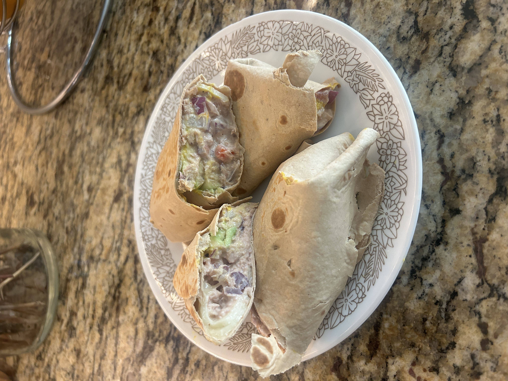
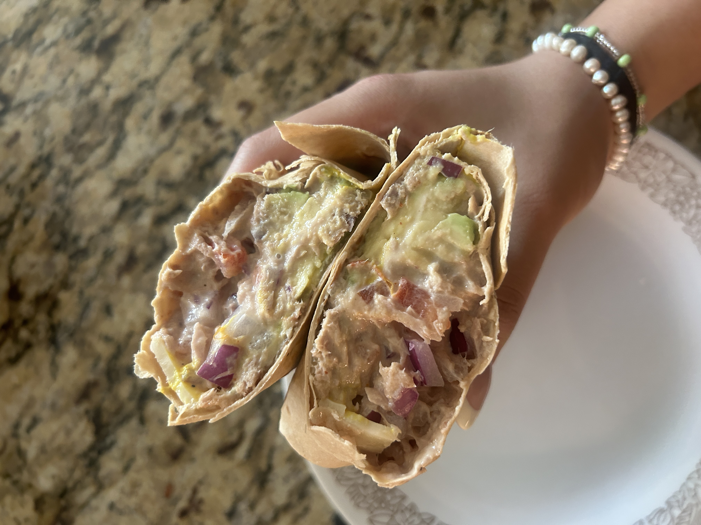

Spicy Tuna Wrap

This easy 10-minute recipe makes two protein-packed wraps that are perfect for lunch or dinner. Made with a creamy cottage cheese and tuna mix, fresh tomato, red onion, sliced avocado, and melty Monterey Jack, all wrapped in a high-protein tortilla. Quick to make and seriously satisfying. Don't worry it's not super spicy, the spice level is about a 1/10!
Nutrition Facts
- ~ 340 calories per wrap
- ~ 34g protein per wrap
- ~ 16g fat per wrap
- ~ 17g net carbs per wrap
Ingredients

- 1/2 cup low fat cottage cheese
- 1/2 tbsp sriracha
- 1/2 tsp pepper, garlic powder, onion powder
- 1 can tuna light
- 1/2 cup diced red onion
- 1/2 roma tomato, diced
- 2 high-protein tortillas
- 2 slices of monterry jack cheese
- Yellow Mustard
- 1/2 avocado
Steps to Make
- In a blender, blend your cottage cheese, sriracha, and seasonings until smooth with no clumps
- Drain one can of tuna and mix with tomatoes and red onions
- Add 1/4 cup of the blended cottage cheese mixture to your tuna mixture
- Add your 1/2 of the tuna-cottage cheese mixture at the bottom of your tortilla.
- Place 1/4 sliced avocado on top
- Add 1 slice of cheese on top-half of tortilla
- Drizzle with yellow Mustard

- Fold bottom portion up, then tortilla edges inwards, and roll like a burrito
- Repeat one more time for another burrito
- Toast burritos on med-high heat for 3 minutes or until golden brown
- Cut in half and enjoy your creamy tuna wrap!!
